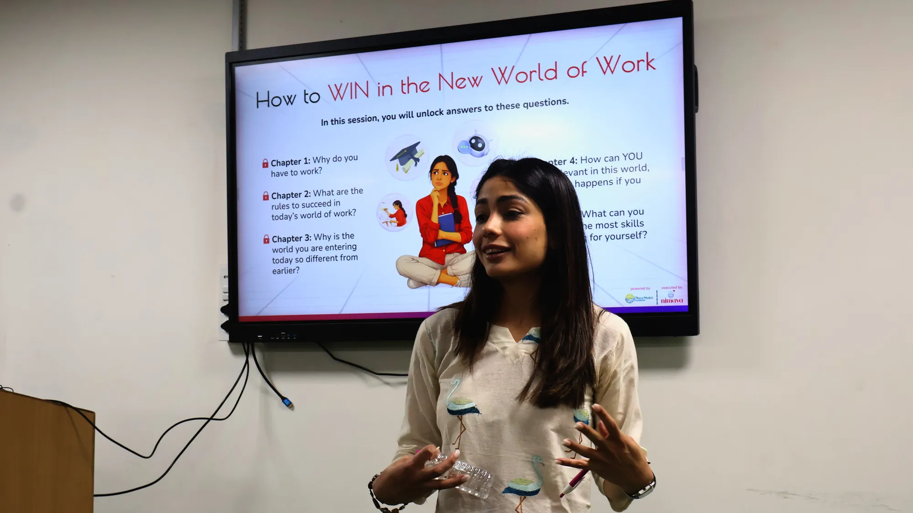
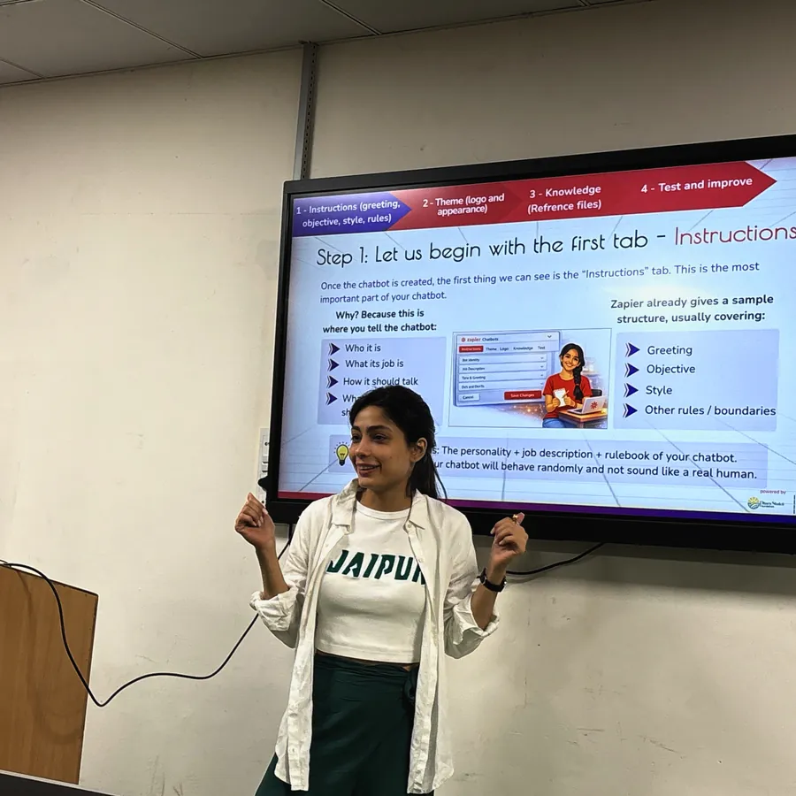

Build a career that
builds Careers
We’re a small, fast-moving team taking GenAI skills to young women across India. If you want your work to change what’s possible for a Naari, we’d love to hear from you.
Open Roles
Applications open in a new tab.
-
Communications Coordinator
Communications
 Mumbai (preferred) / Delhi
Mumbai (preferred) / DelhiAbout Nimaya - A Foundation for Future-ready Naaris
Nimaya is a future-ready not-for-profit, co-founded by Navya Nanda and Samyak Chakrabarty, that empowers young women from socio-economic barriers to thrive in the future of work. Our mission is to ensure our Naaris have an edge in leveraging AI at work instead of being at risk of being replaced by it.
Our guiding question: Why can’t a rickshaw driver’s daughter land a job at Google?
Unlike traditional skill-building NGOs, Nimaya prepares women for the AI-powered digital economy, not just with skills, but with aspiration and identity. To date, 10,000+ Nimaya Naaris across 5 states have benefited from our interventions, with partnerships including the Government of India’s YuvaAI Mission.
But we don’t just want to build programmes. We want to build a movement. And movements need stories.
About The Program
Our flagship GenAI Ready Naari programme equips learners with 21st century skills, real-world exposure, and the confidence to pursue meaningful career pathways.
What's exciting about this role?
Nimaya’s work happens every day, in classrooms, in communities and at events. Someone has to make sure it reaches the world on time, curated properly and exactly as planned. That person is you.
As Communications Coordinator, you will be the link between our founders, our programme and ground teams, and our social media agency. You will keep the calendar, the trackers and the follow-ups in order, so everyone knows what is going out, who is doing what and by when.
This is not a creative role. You will not write copy or produce content. You will make sure the people who do are briefed, on time and working to plan. It is a structured job for someone who likes things organised and followed through.
Key Responsibilities
1. Plan the social media calendar with Navya
- Sit with the founder to plan what goes out on Nimaya’s social media each month and week
- Maintain the calendar and the tracking spreadsheets
- Manage the automation tools that schedule and publish posts
- Keep track of what is planned, what is done and what is pending
2. Coordinate with the ground team
- Collect photos, videos and updates from the programme and ground teams
- Make sure they are captured to the standards set
- Follow up so the plan is followed and nothing becomes a last-minute request
3. Make hygiene checks muscle memory
- Check every post and campaign to confirm funders are credited and tagged correctly
- Keep an up-to-date list of funders and their social media handles
4. Coordinate the agency, shoots and events
- Share briefs and deadlines with our social media agency and follow up until the work is delivered
- Arrange the logistics for shoots and events, from dates and people to materials
- Collect approvals and make sure the final content goes out as planned
Requirements
The kind of person we are looking for
You might call yourself an event manager, a client servicing executive, or a coordinator. Or perhaps you haven’t figured out the label yet. That’s okay. What matters is that you are organised, dependable and see things through until they are done.You:
- Like keeping things organised, on time and on track
- Follow up with people politely and persistently
- Are comfortable with spreadsheets, trackers and scheduling tools
- Can communicate clearly with many people at once, including founders, team members and agencies
- Stay calm when a plan changes at short notice
- Notice small details, like a missing tag or a wrong date
- Are happy to do whatever the work needs, including routine tasks
Most importantly: you don’t wait to be asked for an update. You follow up first.
Qualifications
- 1-3 years of prior work experience in any of these areas:
- Event management or event coordination
- Client servicing or account management, preferably at a social media, advertising or communications agency
- Project or operations coordination
- Production coordination for shoots or events
- Social media coordination or community management
- Executive assistance or office coordination
- Experience managing client or stakeholder relationships directly, including in-person coordination
- Experience handling several tasks, events or deadlines at the same time
- Experience planning and running a content or event calendar
- Comfortable with spreadsheets, trackers and calendars, and able to keep them accurate and up to date
- Comfortable with scheduling and automation tools for social media, or willing to learn them quickly
- Experience coordinating with agencies, vendors, photographers or production teams
- Clear written communication for emails, briefs, follow-ups and updates
- Clear spoken communication, comfortable talking to founders, team members and external partners
- Strong attention to detail, such as correct dates, names, tags and credits
- Based out of Delhi/Mumbai
-
Program Manager, Ahmedabad
Programs · GenAI Ready Naari
Ahmedabad (mandatory)About Nimaya - A Foundation for Future-ready Naaris
Nimaya is a future-ready not-for-profit cofounded in 2021 by Navya Nanda and Samyak Chakrabarty, focused on preparing young women facing socio-economic barriers for a world of work being rapidly reshaped by AI and emerging technologies.
As GenAI transforms industries, workflows and hiring expectations, Nimaya works at the intersection of employability and AI readiness to ensure our Nimaya Naaris are not replaced by AI, but instead are equipped to participate and lead in this new economy.
In partnership with institutions such as the Government of India's IndiaAI Mission, we have enabled 10,000+ Nimaya Naaris across 5 states to step into the new world of work with our flagship program - the GenAI Ready Naari.
Learn more about our mission and the impact we create!
- https://www.youtube.com/watch?v=D2q-qB-J1Dk
- https://www.ptinews.com/story/entertainment/navya-nanda-and-samyak-chakrabarty-s-nimaya-partners-with-govt-s-ai-mission/3249973
- https://mastersunion.org/blog/how-navya-nanda-and-samyak-chakrabarty-are-changing-lives-with-nimaya
About The Program
The GenAI Ready Naari Program equips young women with Generative AI skills and future-ready workplace competencies through 40 hours of immersive, hands-on learning, out of which 32 hours are offline training and 8 hours are online. In these sessions, Naaris explore:
- Building Chatbots & training Agentic AIs
- AI-powered research & communication tactics
- Creative problem-solving
- Presentation & collaboration skills
- Real-world projects & mentorship
The goal is not just to teach AI tools but to make learners truly future-ready for what the modern workplace demands: the ability to confidently work with AI instead of feeling threatened by it.
The Project you will join
If selected, you will step into the role of Program Manager of Nimaya's Ahmedabad GenAI Ready Naari Program
Over the next 2 years, this project aims to:
- Upskill 900 young women across Ahmedabad
- Expand GenAI learning to areas where access to AI exposure is still limited
- Ensure meaningful learner outcomes beyond certification
What's exciting about this role?
Imagine being the execution engine of a program that can change the trajectory of a young naari's future in Ahmedabad, someone who may never have been told that AI, technology, and ambitious careers could belong to her too. We're building a program in partnership with Ashoka University's Centre for Social and Behaviour Change to move the needle for young women from underserved communities and prepare them for the future of work.
This is not a traditional operations role. As a Program Manager, you will own the outcomes of the Ahmedabad program: the learner targets, the field operations, the partner relationships, and implementing our Agentic AIs to streamline compliance & reporting.
Key Responsibilities
You will be the person accountable for making 900 learner journeys actually happen.
What does that mean for you? As Program Manager, you get the chance to:
- Own end-to-end delivery of the Ahmedabad program: cohort planning, enrolment pipeline, batch scheduling, and the 900-learner target
- Close and manage partnerships with colleges & NGOs whose female students/beneficiaries our program will upskill
- Lead and manage the on-ground field team (including the Field Manager), setting weekly priorities and reviewing delivery quality
- Coordinate with trainers, internal team, and on-ground stakeholders to ensure smooth delivery.
- Own program data and reporting: operational trackers, impact dashboards, funder reports, and partnership reviews with Ashoka University's CSBC
Requirements
Mindset
- Sees CSR not as charity, but as a nation-building investment.
- Obsessed with detail but driven by the big picture.
- Proactive Attitude: Willingness to take initiative and demonstrate adaptability.
- Passion for Empowerment: A strong desire to support and enable the success of young women from restrictive circumstances.
Background
- 4-5 years of experience in program management, partnerships, or a related strategic role (development sector experience preferred)
- Demonstrated experience managing or overseeing field/ops teams, not just individual delivery
- Excellent written and verbal communication skills; strong stakeholder and partner management experience
- Strong proficiency in Excel / Google Sheets and comfort working with program data to build reports and presentations
- Familiarity with compliance, documentation, and structured reporting systems
- Strong communication skills in English and Hindi; proficiency in Gujarati is essential
- Comfortable with travel within Ahmedabad and occasional travel for partner/program engagements
- Based in Ahmedabad (mandatory)
If you're a self-motivated individual eager to contribute to a meaningful cause, we encourage you to apply. Please send your CV to contact@nimaya.in. Use the subject line "Application: Program Manager, Ahmedabad - [Your Name]" so we can track your application. Women candidates are strongly encouraged to apply.
-
Field Manager, Ahmedabad
Programs · GenAI Ready Naari
Ahmedabad (mandatory)About Nimaya - A Foundation for Future-ready Naaris
Nimaya is a future-ready not-for-profit cofounded in 2021 by Navya Nanda and Samyak Chakrabarty, focused on preparing young women facing socio-economic barriers for a world of work being rapidly reshaped by AI and emerging technologies.
As GenAI transforms industries, workflows and hiring expectations, Nimaya works at the intersection of employability and AI readiness to ensure our Nimaya Naaris are not replaced by AI, but instead are equipped to participate and lead in this new economy.
In partnership with institutions such as the Government of India's IndiaAI Mission, we have enabled 10,000+ Nimaya Naaris across 5 states to step into the new world of work with our flagship program - the GenAI Ready Naari.
Learn more about our mission and the impact we create!
- https://www.youtube.com/watch?v=D2q-qB-J1Dk
- https://www.ptinews.com/story/entertainment/navya-nanda-and-samyak-chakrabarty-s-nimaya-partners-with-govt-s-ai-mission/3249973
- https://mastersunion.org/blog/how-navya-nanda-and-samyak-chakrabarty-are-changing-lives-with-nimaya
About The Program
The GenAI Ready Naari Program equips young women with Generative AI skills and future-ready workplace competencies through 40 hours of immersive, hands-on learning, out of which 32 hours are offline training and 8 hours are online. In these sessions, Naaris explore:
- Building Chatbots & training Agentic AIs
- AI-powered research & communication tactics
- Creative problem-solving
- Presentation & collaboration skills
- Real-world projects & mentorship
The goal is not just to teach AI tools but to make learners truly future-ready for what the modern workplace demands: the ability to confidently work with AI instead of feeling threatened by it.
The Project you will join
If selected, you will step into the role of Field Manager of Nimaya's GenAI Ready Naari Program in Ahmedabad. Over the next 2 years, this project aims to:
- Upskill 900 young women across Ahmedabad
- Expand GenAI learning to areas where access to AI exposure is still limited
- Ensure meaningful learner outcomes beyond certification
What's exciting about this role?
Imagine leading the field charge for a program that can change the trajectory of a young naari's future in Ahmedabad by upskilling her in GenAI and 21st century workplace skills. We're building this program in partnership with Ashoka University's Centre for Social and Behaviour Change, to move the needle for young women from underserved communities and prepare them for the future of work.
This is a hands-on, on-ground execution role. As a Field Manager, you will be present at training centers day to day, keep learner journeys on track, troubleshoot delivery issues in real time, and make sure every session runs smoothly.
Key Responsibilities
- Conduct regular center visits to track attendance and resolve on-ground issues in real time
- Onboard learners, verify documentation, and maintain accurate, batch-wise records through our AI powered program management system
- Coordinate and setup mentoring sessions and live projects
- Be the first point of contact for trainers and venues: flag and fix delivery gaps on the spot
- Support logistics for trainings and other interventions of the program: venue setup, learner mobilization, on-ground troubleshooting
- Escalate risks (attendance drops, trainer issues, compliance gaps) to the Program Manager promptly
- Gather learner feedback and contribute ground-level inputs to impact reporting
Requirements
Mindset
- Calm under pressure: able to improvise when a venue, trainer, or schedule changes at the last minute.
- Energised by being on the ground with learners every day, not managing from behind a screen.
- Proactive Attitude: Willingness to take initiative and demonstrate adaptability.
- Passion for Empowerment: A strong desire to support and enable the success of young women from restrictive circumstances.
Background
- 1-3 years of experience in program operations, field execution, or project management roles
- Experience in community mobilisation or working directly with young women learners is strongly preferred
- Strong proficiency in Excel / Google Sheets / Claude for tracking and reporting
- Familiarity with handling compliance, documentation, and structured reporting systems
- Strong communication skills in English and Hindi; proficiency in Gujarati is essential
- Comfortable with daily travel between training centers within Ahmedabad (batches may run on weekends)
- Based in Ahmedabad (mandatory)
If you're a self-motivated individual eager to contribute to a meaningful cause, we encourage you to apply. Please send your CV to contact@nimaya.in. Use the subject line "Application: Field Manager, Ahmedabad - [Your Name]" so we can track your application. Women candidates are strongly encouraged to apply.
-
GenAI & Workplace Skills Trainer, Guwahati
Training · GenAI Ready Naari
Guwahati / Kolkata (mandatory)About Nimaya - A Foundation for Future-ready Naaris
Nimaya is a future-ready not-for-profit cofounded in 2021 by Navya Nanda and Samyak Chakrabarty, focused on preparing young women facing socio-economic barriers for a world of work being rapidly reshaped by AI and emerging technologies.
As GenAI transforms industries, workflows and hiring expectations, Nimaya works at the intersection of employability and AI readiness to ensure our Nimaya Naaris are not replaced by AI, but instead are equipped to participate and lead in this new economy.
In partnership with institutions such as the Government of India's IndiaAI Mission, we have enabled 10,000+ Nimaya Naaris across 5 states to step into the new world of work with our flagship program - the GenAI Ready Naari.
Learn more about our mission and the impact we create!
- https://www.youtube.com/watch?v=D2q-qB-J1Dk
- https://www.ptinews.com/story/entertainment/navya-nanda-and-samyak-chakrabarty-s-nimaya-partners-with-govt-s-ai-mission/3249973
- https://mastersunion.org/blog/how-navya-nanda-and-samyak-chakrabarty-are-changing-lives-with-nimaya
About The Program
Guwahati's GenAI Ready Naari Program, in partnership with Ashoka University's Centre for Social & Behaviour Change (CSBC), is a fully sponsored, industry-relevant training that equips young women with Generative AI skills and future-ready workplace competencies. Through immersive role play based simulations, beneficiaries learn the building blocks of prompting across professional use cases, practice how to build Agentic AIs & train chat bots and master the art of co-creating innovative outputs with AI. The 40 hour hybrid program also includes exposure to in-demand 21st century workplace skills such as storytelling, critical thinking, creative problem solving and emotional intelligence.
What's exciting about this role?
Join us in empowering young women of Guwahati to thrive in the future of work. Imagine teaching a curriculum that can transform the trajectory of a young naari's future, someone who may never have been told that AI, technology, and ambitious careers could belong to her too!
As a Trainer, you will upskill them in the fundamentals of Generative AI tools, prompting techniques and co-creating with AI, alongside building their workplace readiness with essential skills like storytelling for impact and creative problem-solving, thereby equipping them with the tools, confidence, and resilience to succeed in a rapidly changing environment.
Key Responsibilities
- Deliver the Co-Creating with AI learning pillar, equipping young learners with practical skills to effectively use leading Generative AI tools for content creation, research, visual design, productivity, and workflow automation.
- Deliver the Future-Ready Workplace Skills learning pillar using Nimaya's proprietary curriculum, facilitating sessions on critical thinking, creative problem-solving, and effective communication to help learners develop the human skills that complement AI.
- Deliver the Becoming Career Ready learning pillar, preparing learners for the world of work through modules such as Build Your Personal Brand & Networking and Winning as a Woman in the World of Work (including POSH Sensitization).
- Support the team with administrative aspects such as attendance, conducting assessments and enabling vlog shoots / live reporting of lessons
Requirements
Mindset
- Energised by the classroom: brings warmth, patience, and high energy to every session.
- Comfortable with technology that changes every month, and curious enough to keep learning it.
- Passion for Empowerment: A strong desire to support and enable the success of young women from restrictive circumstances.
Background
- Strong understanding of Generative AI tools and effective prompting techniques with the ability to simplify complex concepts for first-time learners.
- Demonstrated experience teaching or facilitating Generative AI tools for beginner audiences, not just personal proficiency with them.
- 2+ years of experience delivering engaging training sessions in both online and offline settings. Experience working with youth, college students, or adult learners is preferred.
- Demonstrated ability to understand and effectively engage with young learners from diverse socio-economic backgrounds.
- Excellent facilitation and interpersonal skills, with the ability to foster an inclusive, supportive, and engaging learning environment while collaborating effectively with internal teams and partner institutions.
- Strong organizational and classroom management skills, with the ability to manage multiple learner cohorts, monitor progress, and maintain accurate training records.
- Adaptable and responsive to evolving program requirements and diverse learner needs.
- Excellent verbal communication and presentation skills, with confidence in delivering interactive sessions in both Hindi and English; proficiency in Assamese is essential.
If you're a self-motivated individual eager to join a mission to upskill young women to be leaders at the workplace of tomorrow, we encourage you to apply. Please write us an email along with your CV at contact@nimaya.in with the subject line "Application: GenAI & Workplace Skills Trainer, Guwahati - [Your Name]". Women candidates are strongly encouraged to apply.
-
GenAI & Workplace Skills Trainer, Ahmedabad
Training · GenAI Ready Naari
Ahmedabad (mandatory)About Nimaya - A Foundation for Future-ready Naaris
Nimaya is a future-ready not-for-profit cofounded in 2021 by Navya Nanda and Samyak Chakrabarty, focused on preparing young women facing socio-economic barriers for a world of work being rapidly reshaped by AI and emerging technologies.
As GenAI transforms industries, workflows and hiring expectations, Nimaya works at the intersection of employability and AI readiness to ensure our Nimaya Naaris are not replaced by AI, but instead are equipped to participate and lead in this new economy.
In partnership with institutions such as the Government of India's IndiaAI Mission, we have enabled 10,000+ Nimaya Naaris across 5 states to step into the new world of work with our flagship program - the GenAI Ready Naari.
Learn more about our mission and the impact we create!
- https://www.youtube.com/watch?v=D2q-qB-J1Dk
- https://www.ptinews.com/story/entertainment/navya-nanda-and-samyak-chakrabarty-s-nimaya-partners-with-govt-s-ai-mission/3249973
- https://mastersunion.org/blog/how-navya-nanda-and-samyak-chakrabarty-are-changing-lives-with-nimaya
About The Program
Ahmedabad's GenAI Ready Naari Program, in partnership with Ashoka University's Centre for Social & Behaviour Change (CSBC), is a fully sponsored, industry-relevant training that equips young women with Generative AI skills and future-ready workplace competencies. Through immersive role play based simulations, beneficiaries learn the building blocks of prompting across professional use cases, practice how to build Agentic AIs & train chat bots and master the art of co-creating innovative outputs with AI. The 40 hour hybrid program also includes exposure to in-demand 21st century workplace skills such as storytelling, critical thinking, creative problem solving and emotional intelligence.
What's exciting about this role?
Join us in empowering young women of Ahmedabad to thrive in the future of work. Imagine teaching a curriculum that can transform the trajectory of a young naari's future, someone who may never have been told that AI, technology, and ambitious careers could belong to her too!
As a Trainer, you will upskill them in the fundamentals of Generative AI tools, prompting techniques and co-creating with AI, alongside building their workplace readiness with essential skills like storytelling for impact and creative problem-solving, thereby equipping them with the tools, confidence, and resilience to succeed in a rapidly changing environment.
Key Responsibilities
- Deliver the Co-Creating with AI learning pillar, equipping young learners with practical skills to effectively use leading Generative AI tools for content creation, research, visual design, productivity, and workflow automation.
- Deliver the Future-Ready Workplace Skills learning pillar using Nimaya's proprietary curriculum, facilitating sessions on critical thinking, creative problem-solving, and effective communication to help learners develop the human skills that complement AI.
- Deliver the Becoming Career Ready learning pillar, preparing learners for the world of work through modules such as Build Your Personal Brand & Networking and Winning as a Woman in the World of Work (including POSH Sensitization).
- Support the team with administrative aspects such as attendance, conducting assessments and enabling vlog shoots / live reporting of lessons
Requirements
Background
- Strong understanding of Generative AI tools and effective prompting techniques with the ability to simplify complex concepts for first-time learners.
- Demonstrated experience teaching or facilitating Generative AI tools for beginner audiences, not just personal proficiency with them.
- 2+ years of experience delivering engaging training sessions in both online and offline settings. Experience working with youth, college students, or adult learners is preferred.
- Demonstrated ability to understand and effectively engage with young learners from diverse socio-economic backgrounds.
- Excellent facilitation and interpersonal skills, with the ability to foster an inclusive, supportive, and engaging learning environment while collaborating effectively with internal teams and partner institutions.
- Strong organizational and classroom management skills, with the ability to manage multiple learner cohorts, monitor progress, and maintain accurate training records.
- Adaptable and responsive to evolving program requirements and diverse learner needs.
- Excellent verbal communication and presentation skills, with confidence in delivering interactive sessions in both Hindi and English; proficiency in Gujarati is essential.
If you're a self-motivated individual eager to join a mission to upskill young women to be leaders at the workplace of tomorrow, we encourage you to apply. Please write us an email along with your CV at contact@nimaya.in with the subject line "Application: GenAI & Workplace Skills Trainer, Ahmedabad - [Your Name]". Women candidates are strongly encouraged to apply.
-
Program Manager, Haryana
Programs · GenAI Ready Naari
Faridabad (mandatory)About Nimaya - A Foundation for Future-ready Naaris
Nimaya is a future-ready not-for-profit cofounded in 2021 by Navya Nanda and Samyak Chakrabarty, focused on preparing young women facing socio-economic barriers for a world of work being rapidly reshaped by AI and emerging technologies.
As GenAI transforms industries, workflows and hiring expectations, Nimaya works at the intersection of employability and AI readiness to ensure our Nimaya Naaris are not replaced by AI, but instead are equipped to participate and lead in this new economy.
In partnership with institutions such as the Government of India's IndiaAI Mission, we have enabled 10,000+ Nimaya Naaris across 5 states to step into the new world of work with our flagship program - the GenAI Ready Naari.
Learn more about our mission and the impact we create!
- https://www.youtube.com/watch?v=D2q-qB-J1Dk
- https://www.ptinews.com/story/entertainment/navya-nanda-and-samyak-chakrabarty-s-nimaya-partners-with-govt-s-ai-mission/3249973
- https://mastersunion.org/blog/how-navya-nanda-and-samyak-chakrabarty-are-changing-lives-with-nimaya
About The Program
Nimaya's GenAI Ready Naari Program
The GenAI Ready Naari Program equips young women with Generative AI skills and future-ready workplace competencies through 40 hours of immersive, hands-on learning, out of which 32 hours are offline training and 8 hours are online. In these sessions, Naaris explore:
- Building Chatbots & training Agentic AIs
- AI-powered research & communication tactics
- Creative problem-solving
- Presentation & collaboration skills
- Real-world projects & mentorship
The goal is not just to teach AI tools but to make learners truly future-ready for what the modern workplace demands: the ability to confidently work with AI instead of feeling threatened by it.
The Project you will join
If selected, you will step into the role of Program Manager of Nimaya's Haryana GenAI Ready Naari Program.
Over the next year, this project aims to:
- Upskill 700 young women across Faridabad
- Expand GenAI learning to areas where access to AI exposure is still limited
- Ensure meaningful learner outcomes beyond certification
What's exciting about this role?
Imagine being the execution engine of a program that can change the trajectory of a young Naari's future in Faridabad, someone who may never have been told that AI, technology, and ambitious careers could belong to her too.
This is not a traditional operations role. As a Program Manager, you will own the outcomes of the Faridabad program: the learner targets, the field operations, the partner relationships, and implementing our Agentic AIs to streamline compliance & reporting.
You will be the person accountable for making 700 learner journeys actually happen.
Key Responsibilities
As Program Manager, you get the chance to:
- Own end-to-end delivery of the Faridabad program: cohort planning, enrolment pipeline, batch scheduling, and the 700-learner target
- Lead and manage the on-ground field team, setting weekly priorities and reviewing delivery quality
- Coordinate with trainers, internal team, and on-ground stakeholders to ensure smooth delivery.
- Own program data and reporting: operational trackers, impact dashboards and funder reports
Requirements
Mindset
- Sees CSR not as charity, but as a nation-building investment.
- Obsessed with detail but driven by the big picture.
- Proactive Attitude: Willingness to take initiative and demonstrate adaptability.
- Passion for Empowerment: A strong desire to support and enable the success of young women from restrictive circumstances.
Background
- 3-5 years of experience in program management, partnerships, or a related strategic role (development sector experience preferred)
- Demonstrated experience managing or overseeing field/ops teams, not just individual delivery
- Excellent written and verbal communication skills; strong stakeholder and partner management experience
- Strong proficiency in Excel / Google Sheets and comfort working with program data to build reports and presentations
- Familiarity with compliance, documentation, and structured reporting systems
- Strong communication skills in English and Hindi
- Comfortable with travel within Faridabad
- Based in Faridabad (mandatory)

Don’t see your role?
We’re always glad to meet trainers, program leads and storytellers who care about the future of work for women. Tell us how you’d like to help.